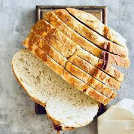
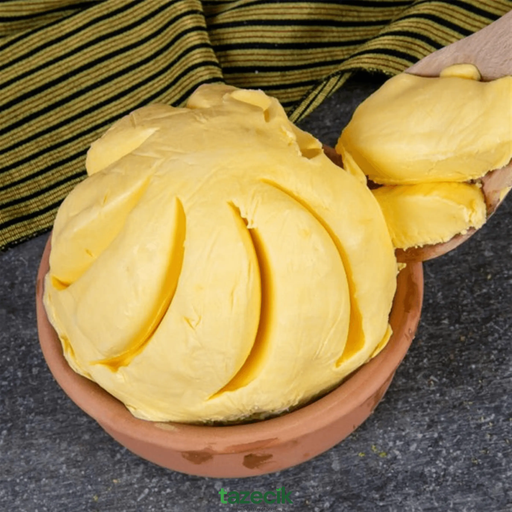
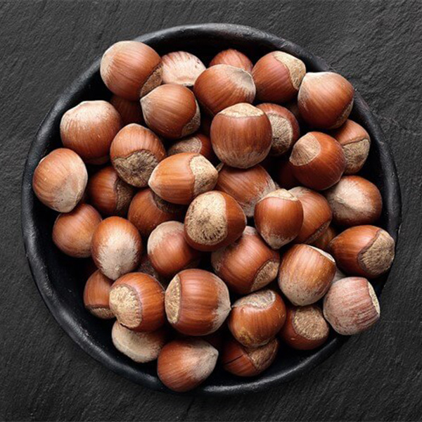
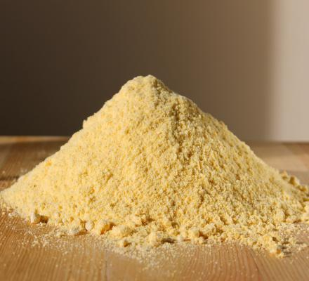

Trabzon Yöresel Ürünleri

Vakfıkebir Ekmeği(1 adet)
Taş fırınlarda uzun süre pişirilen, yoğun aromalı ve dayanıklı geleneksel Trabzon ekmeği.
₺150
Trabzon Tereyağı(1kg)
Karadeniz yaylalarında elde edilen sütten üretilen, yoğun kokulu doğal tereyağı.
₺1.000
Fındık(1kg)
Doğal yöntemlerle yetiştirilen, yüksek aromalı ve taze Karadeniz fındığı.
₺1.100
Kuymaklık Mısır Unu(100gr)
Trabzon’un meşhur kuymak tariflerinde kullanılan, taş değirmende öğütülmüş doğal mısır unu.
₺230